Chrono Quest
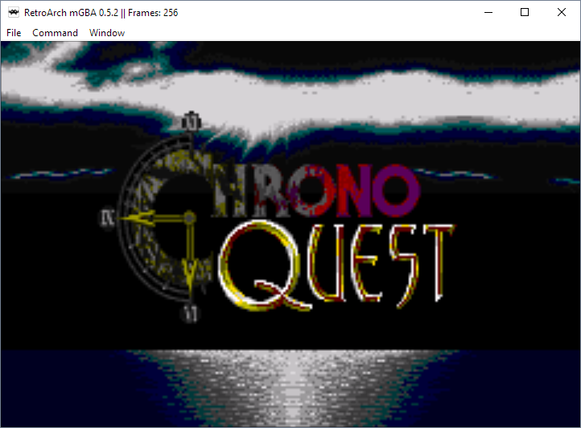
Controls:
A: Interact
B: Attack when weapon drawn
L or R: Draw weapon
D-Pad: Move
Start: Pause
Concept:
This is a "full" GBA game in the sense that it is made in tilemap mode 0, which can handle four tiled background layers with sprite-based graphics. All fundamentals of GBA development are present here. This includes DMA audio, sprites and palette handling, tile-based display buffer, animation state machines, and bit-wise button handling.
The game itself is a puzzle/action game. Our main character, Chrono, cannot swing his sword unless it is fully unsheathed, and it takes time to sheath and unsheath his sword. He also cannot move while he is ready to strike or sheathing/unsheathing his sword. Thus, Chrono must use his sword with proper deliberation. Our hero is tasked with collecting three artifacts, each locked behind a puzzle or challenge. In the first room, the flames on the wall reveal a hidden switch. In the second room, an armored guardian protects the artifact and can only be damaged from behind. In the third room, the artifact hangs from a tree limb perilously at the edge of a cliff eager to be knocked to the ground.
Credits:
Sprites: Chrono Trigger, Zelda: Four Swords, Castlevania: Circle of the Moon, Castlevania: Symphony of the Night
Tiles: Chrono Trigger, Final Fantasy Mystic Quest, Final Fantasy IV
Music: Chrono Trigger
Source referenced: TONC
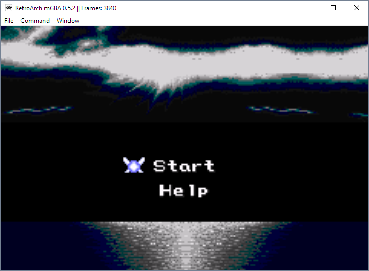
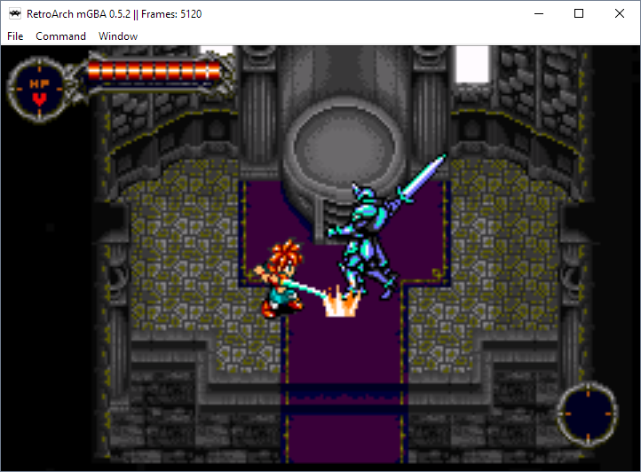
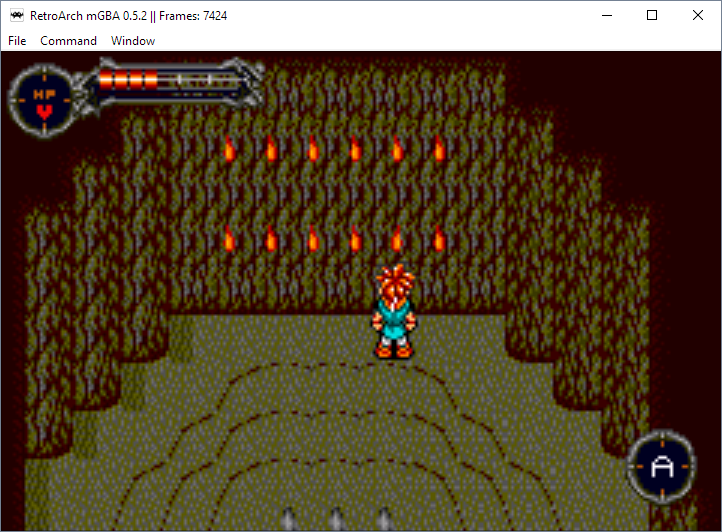
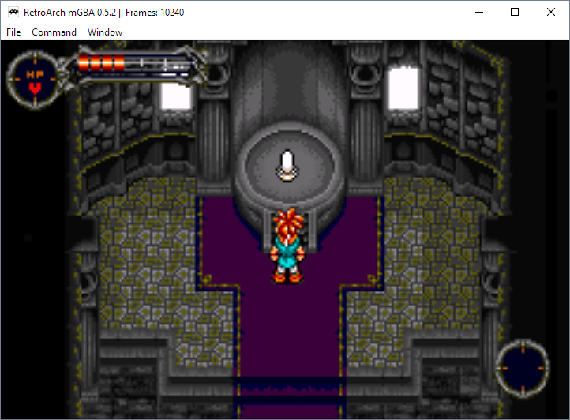
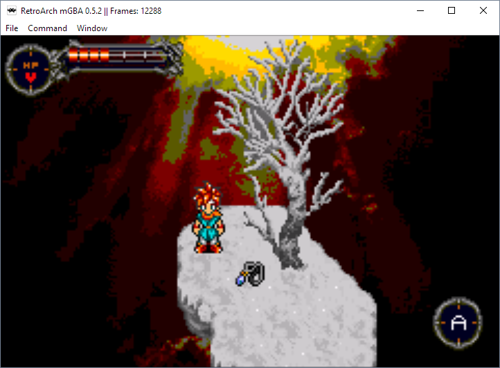
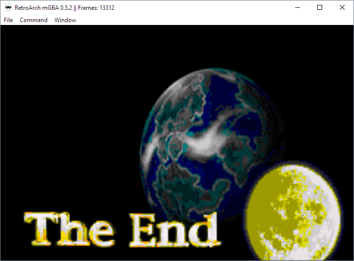
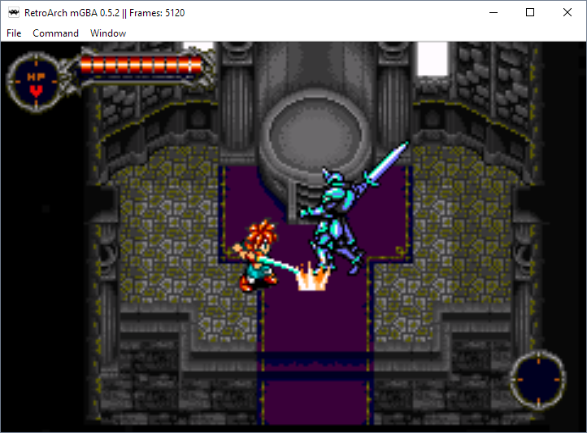
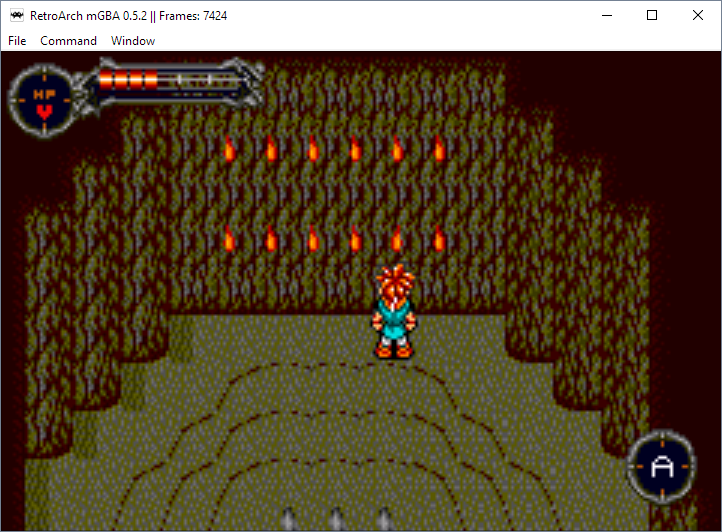
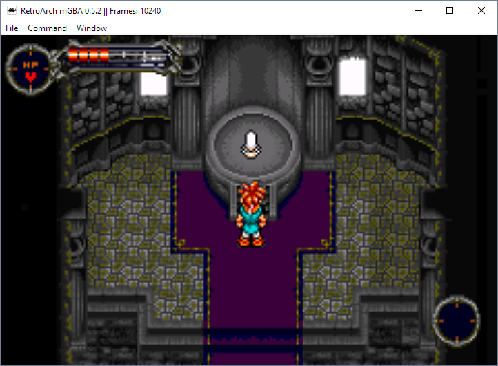
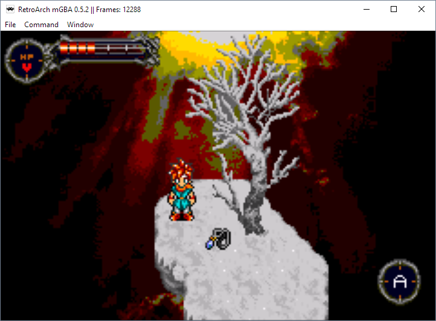
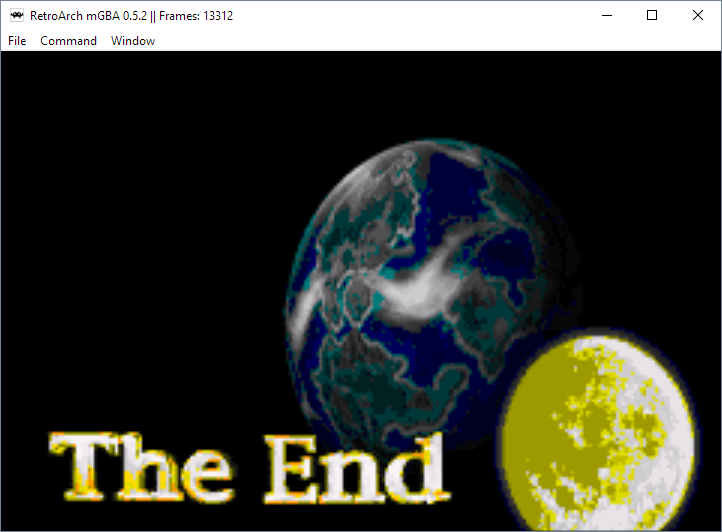